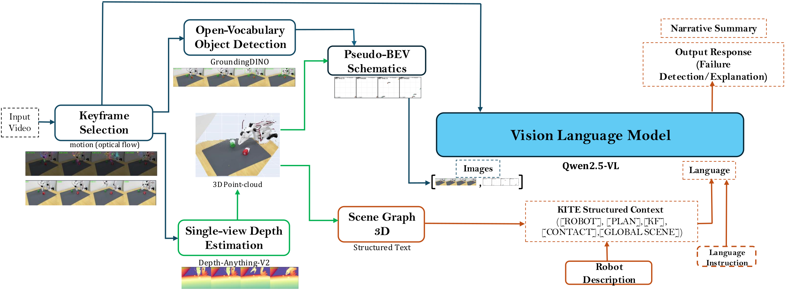
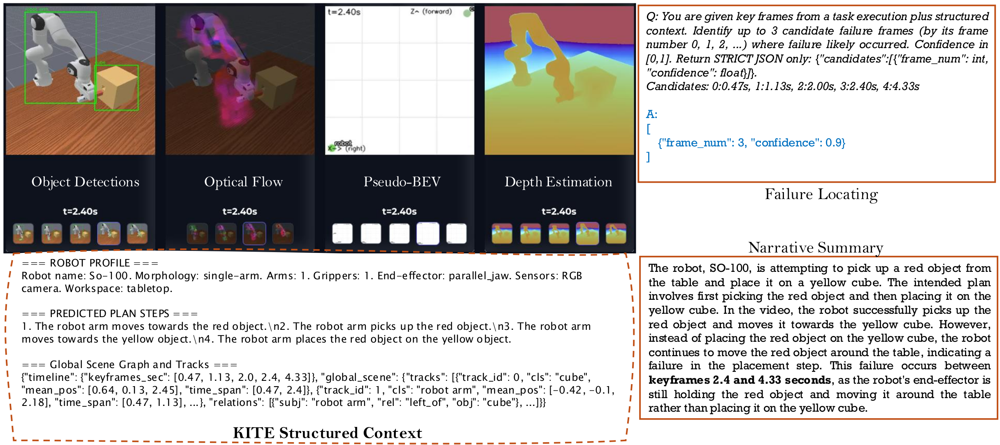
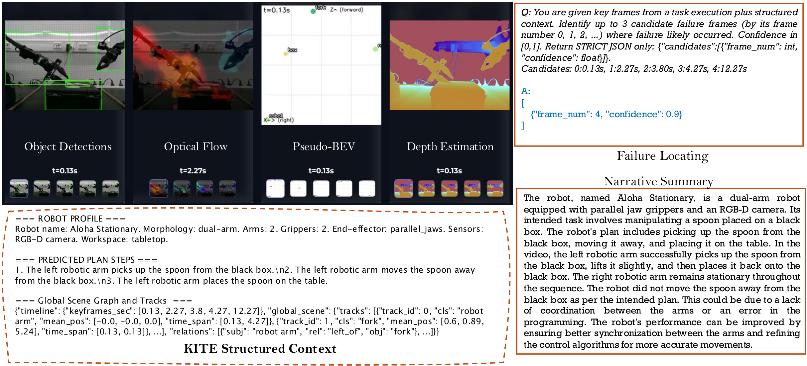

We present KITE, a training-free, keyframe-anchored, layout-grounded front-end that converts long robot-execution videos into compact, interpretable tokenized evidence for vision-language models (VLMs). KITE distills each trajectory into a small set of motion-salient keyframes with open-vocabulary detections and pairs each keyframe with a schematic bird's-eye-view (BEV) representation that encodes relative object layout, axes, timestamps, and detection confidence. These visual cues are serialized with robot-profile and scene-context tokens into a unified prompt, allowing the same front-end to support failure detection, identification, localization, explanation, and correction with an off-the-shelf VLM.
On the RoboFAC benchmark, KITE with Qwen2.5-VL substantially improves over vanilla Qwen2.5-VL in the training-free setting—with especially large gains on simulation failure detection (+36%), identification (+18%), and localization (+33%)—while remaining competitive with a RoboFAC-tuned baseline. A small QLoRA fine-tune further improves explanation and correction quality. We also report qualitative results on real dual-arm robots, demonstrating the practical applicability of KITE as a structured and interpretable front-end for robot failure analysis.
KITE converts a raw execution video into a compact, interpretable evidence bundle for any VLM.

Keyframe Selection
Motion-salient frames selected via optical flow peak detection with temporal non-maximum suppression.
Per-Keyframe Perception
Open-vocabulary detection, single-view depth estimation, and a coarse contact-proxy token per frame.
Pseudo-BEV Schematic
Non-metric top-down layout cues with tracked objects, confidence radii, timestamps, and consistent IDs.
KITE Structured Context
[ROBOT] morphology, gripper, workspace
‖
[PLAN] numbered plan steps
‖
[KF ik @ tk] timestamped keyframes
‖
[CONTACT] Yk
‖
[GLOBAL_SCENE] tracks & relations
Watch KITE in action—from raw video to grounded failure explanation.
Evaluated on the RoboFAC benchmark with both simulation and real-world tasks. See the paper for full results.
+36%
Failure Detection
(Simulation)
+18%
Failure Identification
(Simulation)
+33%
Failure Localization
(Simulation)
Training-free gains of KITE + Qwen2.5-VL-7B over vanilla Qwen2.5-VL-7B
| Model | Simulation | Real-world | ||||
|---|---|---|---|---|---|---|
| FD | FI | FL | FD | FI | FL | |
| Gemini-2.0 | 0.48 | 0.27 | 0.75 | 0.60 | 0.11 | 0.18 |
| GPT-4o | 0.64 | 0.21 | 0.71 | 0.96 | 0.43 | 0.52 |
| Qwen2.5-VL-7B | 0.52 | 0.26 | 0.22 | 0.83 | 0.38 | 0.72 |
| KITE + Qwen2.5-VL-7B | 0.88 | 0.44 | 0.55 | 0.84 | 0.43 | 0.74 |
| RoboFAC-7B† | 0.91 | 0.63 | 0.94 | 0.80 | 0.56 | 0.71 |
| KITE + QLoRA† | 0.93 | 0.69 | 0.92 | 0.89 | 0.58 | 0.77 |
| FD = Failure Detection, FI = Failure Identification, FL = Failure Locating. † Fine-tuned on RoboFAC. | ||||||

Simulation (RoboFAC). Keyframes with detection overlays, optical flow, pseudo-BEV schematics, and depth estimates. KITE correctly localises the failure frame and generates a grounded narrative summary.

Real-world (ALOHA-2). During a bimanual handover the fork is dropped. KITE's structured context enables the VLM to produce a grounded explanation that references arm coordination and the robot's dual-arm morphology.
@inproceedings{hosseinzadeh2025kite,
title = {KITE: Keyframe-Indexed Tokenized Evidence for VLM-Based Robot Failure Analysis},
author = {Hosseinzadeh, Mehdi and Wong, King Hang and Dayoub, Feras},
booktitle = {IEEE International Conference on Robotics and Automation (ICRA)},
year = {2026}
}